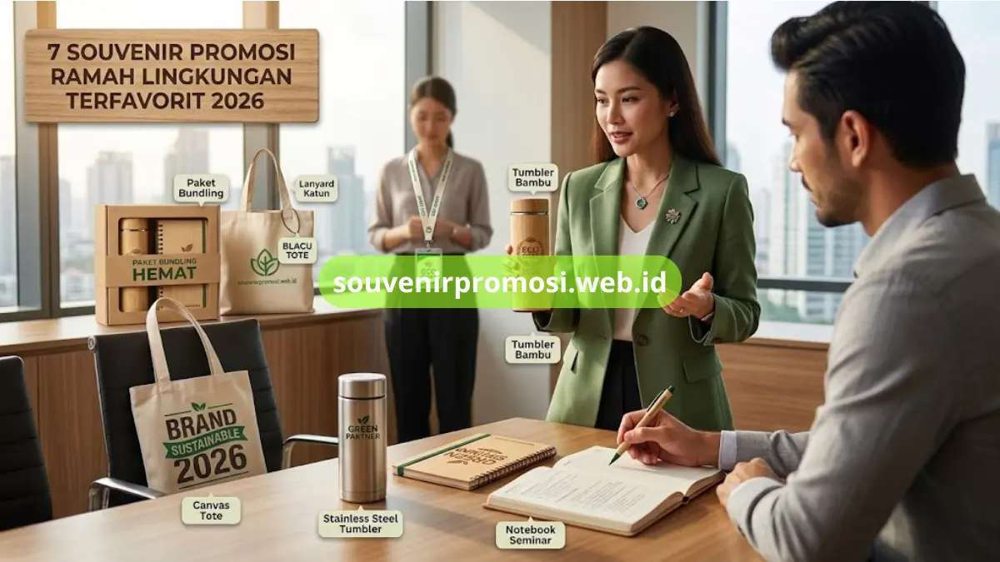

Poin Penting
- Tujuh kategori souvenir ramah lingkungan siap custom logo perusahaan.
- Material utama meliputi bambu, stainless steel, kanvas, blacu, dan kertas daur ulang.
- Cocok untuk seminar, corporate gathering, onboarding karyawan, dan hadiah klien VIP.
- Seluruh produk dapat dipesan langsung melalui souvenirpromosi.web.id.
- Tersedia opsi bundling untuk efisiensi anggaran acara berskala besar.
Daftar Isi
- Apa Itu Souvenir Promosi Ramah Lingkungan?
- 1. Tumbler Custom Bambu
- 2. Tumbler Stainless Steel
- 3. Tote Bag Kanvas Custom
- 4. Tote Bag Blacu Ramah Lingkungan
- 5. Seminar Kit Ramah Lingkungan
- 6. Lanyard dan ID Card Berbahan Organik
- 7. Paket Bundling Souvenir
- Mengapa Memesan di souvenirpromosi.web.id?
- FAQ
Souvenir promosi ramah lingkungan adalah merchandise korporat berbahan dasar alami atau daur ulang, seperti bambu, kanvas, dan kertas daur ulang, yang digunakan perusahaan untuk memperkuat citra brand sekaligus menunjukkan komitmen keberlanjutan.
Tujuh pilihan paling banyak dipesan meliputi tumbler bambu, tumbler stainless, tote bag kanvas, tote bag blacu, seminar kit daur ulang, lanyard organik, dan paket bundling hemat. Seluruh produk tersebut tersedia dengan opsi custom logo dan siap dipesan langsung di souvenirpromosi.web.id untuk kebutuhan seminar, corporate gathering, hingga hadiah klien.
Apa Itu Souvenir Promosi Ramah Lingkungan dan Mengapa Penting untuk Branding Perusahaan?
Souvenir promosi ramah lingkungan adalah kategori merchandise korporat yang diproduksi dari bahan yang dapat terurai, digunakan kembali, atau berasal dari proses daur ulang. Kategori ini digunakan oleh divisi marketing, HRD, dan panitia acara untuk membagikan cendera mata bermuatan identitas brand kepada karyawan, klien, maupun peserta acara.
Souvenir jenis ini umumnya dipilih saat perusahaan ingin menonjolkan citra profesional yang selaras dengan program lingkungan atau tanggung jawab sosial perusahaan. Dibandingkan souvenir berbahan plastik konvensional, produk ramah lingkungan cenderung memiliki daya pakai lebih lama sehingga logo perusahaan berpotensi dilihat berulang kali oleh penerimanya.
1. Tumbler Custom Bambu untuk Kesan Premium dan Eksklusif
Tumbler bambu menghadirkan tampilan natural yang cocok dipakai untuk souvenir tamu VIP, direksi, maupun mitra bisnis. Bagian luar berbahan bambu solid dipadukan dengan tabung dalam stainless steel, sementara area logo dapat dicetak menggunakan teknik grafir laser agar hasil cetak lebih tahan lama. Produk ini termasuk dalam kategori Tumbler Custom Ramah Lingkungan yang tersedia lengkap di souvenirpromosi.web.id, mulai dari pemilihan kapasitas hingga desain kemasan pendukung.

2. Tumbler Stainless Steel Ramah Lingkungan untuk Pemakaian Harian
Tumbler stainless steel food grade dipilih perusahaan yang membutuhkan souvenir dengan fungsi menahan suhu panas maupun dingin dalam waktu lebih lama. Bodi tumbler dapat dicetak logo menggunakan metode sablon, UV printing, atau stiker timbul sesuai anggaran dan jumlah pemesanan. Varian warna dan kapasitasnya dapat disesuaikan agar konsisten dengan identitas visual perusahaan, dan seluruh detail spesifikasi tersedia di halaman katalog tumbler souvenirpromosi.web.id.
3. Tote Bag Kanvas Custom dengan Area Cetak Logo yang Luas
Tote bag kanvas menjadi salah satu souvenir yang paling sering dipakai ulang oleh penerimanya karena bentuknya yang fungsional untuk membawa dokumen, laptop, atau belanjaan harian. Bidang kanvas yang lebar memberi ruang cetak logo yang lebih leluasa dibandingkan media promosi lain. Produk ini masuk dalam kategori Tote Bag Kanvas Custom yang dapat dipesan dengan berbagai ukuran dan model tali di souvenirpromosi.web.id.
4. Tote Bag Blacu Ramah Lingkungan untuk Anggaran Acara yang Efisien
Bagi perusahaan yang memerlukan souvenir dalam jumlah besar dengan anggaran per unit lebih terjangkau, tote bag berbahan blacu menjadi opsi yang tetap mempertahankan kesan ramah lingkungan. Material blacu memiliki tekstur alami yang cocok untuk sablon logo sederhana maupun desain multiwarna. Varian ini tersedia sebagai pelengkap katalog Tote Bag Kanvas Custom di souvenirpromosi.web.id.
5. Seminar Kit Ramah Lingkungan Lengkap dengan Notebook dan Pulpen Kayu
Seminar kit ramah lingkungan berisi kombinasi notebook berbahan kertas daur ulang dan pulpen berbahan kayu atau bambu yang dikemas dalam satu paket praktis untuk peserta acara. Paket ini banyak digunakan oleh panitia seminar, workshop, maupun pelatihan internal perusahaan. Detail komponen, opsi kemasan, dan pilihan bundling seminar kit dapat dilihat lengkap pada kategori Seminar Kit Ramah Lingkungan di souvenirpromosi.web.id.
6. Lanyard dan ID Card Berbahan Organik untuk Detail Branding yang Konsisten
Lanyard dan ID card berbahan organik menjadi pelengkap seminar kit yang memperkuat kesan menyeluruh terhadap komitmen keberlanjutan perusahaan. Material tali dapat dipilih dari katun atau kanvas dengan cetak logo satu hingga dua sisi. Produk ini biasa dipesan bersamaan dengan paket Seminar Kit Ramah Lingkungan untuk kebutuhan acara berskala menengah hingga besar.
7. Paket Bundling Souvenir Ramah Lingkungan untuk Kebutuhan Acara Skala Besar
Bagi perusahaan yang membutuhkan beberapa jenis souvenir sekaligus dalam satu acara, paket bundling menggabungkan tumbler, tote bag, dan seminar kit dalam satu pemesanan terpadu. Skema ini memudahkan panitia acara maupun tim procurement karena proses pemesanan, desain logo, dan pengiriman dapat dikoordinasikan dalam satu jalur komunikasi dengan tim souvenirpromosi.web.id.
Mengapa Memesan Souvenir Promosi Ramah Lingkungan di souvenirpromosi.web.id?
Perusahaan yang memesan souvenir promosi ramah lingkungan di souvenirpromosi.web.id mendapatkan akses ke katalog produk yang telah dikurasi untuk kebutuhan korporat, mulai dari drinkware, tas, hingga paket seminar kit. Proses cetak logo dikerjakan dengan memperhatikan ketahanan warna agar identitas brand tetap terlihat jelas dalam pemakaian jangka panjang. Tim souvenirpromosi.web.id juga membantu koordinasi jumlah pesanan skala grosir sehingga perusahaan dapat merencanakan anggaran souvenir untuk acara maupun program apresiasi karyawan secara lebih terstruktur.
Ketujuh kategori souvenir promosi ramah lingkungan di atas, mulai dari tumbler bambu hingga paket bundling seminar kit, memberikan opsi lengkap bagi perusahaan yang ingin menghadirkan merchandise berkualitas sekaligus mendukung citra brand yang peduli lingkungan. Jangan tunggu sampai acara mendekat.